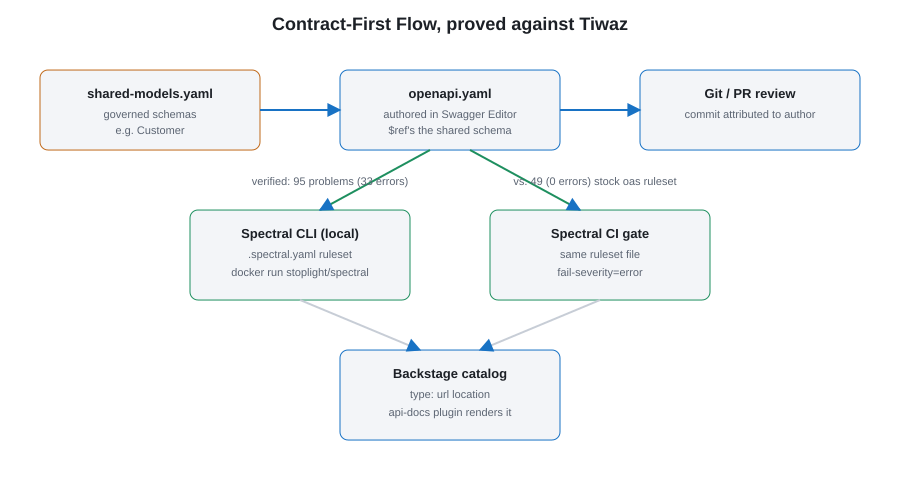

Contract-First Practice, proved against a real API
Design REST API contracts before writing code, govern them with shared schemas + lint rules, catalog them centrally, and gate CI on contract quality — using a real external service, Tiwaz (a .NET Bonds Management API), as the worked example.
Scope note: Tiwaz's own repository and CI pipeline were not modified as part of this. Everything lives in Agora: a mirrored snapshot of Tiwaz's real contract, a governance ruleset, and an illustrative CI snippet.
The pieces
| Piece | Location | Purpose |
|---|---|---|
| Shared schemas | governance/shared-models.yaml | Common types (e.g. Customer) that multiple contracts $ref instead of redefining. |
| Lint ruleset | governance/.spectral.yaml | The governance gate: Spectral rules every contract should pass before merge/deploy. |
| Draft contract | apis/sample-orders-api/ | A contract authored from scratch, $ref-ing shared schemas — "design-first, nothing exists yet." |
| Real contract snapshot | apis/tiwaz-bonds-api/ | Point-in-time mirror of an already-deployed service's contract — "bring an existing API into governance." |
| Catalog | backstage/app-config.local.yaml | Registers both contracts in the Backstage API catalog/docs. |

Case study: bringing Tiwaz into governance
Tiwaz (Bonds Management API) is a real, deployed .NET 8 service. Its CI
currently does restore → build → test → dotnet-format → publish → docker build/push.
Neither its CI nor CD validates the OpenAPI contract itself — only the code.
Step 1 — pull the real contract
curl --noproxy '*' -k -L -o apis/tiwaz-bonds-api/openapi.json `
https://tiwaz.hayatnet.local/swagger/v1/swagger.jsonStep 2 — catalog it
apis/tiwaz-bonds-api/catalog-info.yaml registers it as a Backstage API
entity, linking back to the live Swagger UI — same type: url pattern as the sample API.
Step 3 — lint it against the governance ruleset (verified results)
docker run --rm -v "${PWD}:/tmp/work" stoplight/spectral lint `
/tmp/work/apis/tiwaz-bonds-api/openapi.json `
--ruleset /tmp/work/governance/.spectral.yamlRun against the live contract pulled on 2026-11-08:
| Ruleset | Problems found |
|---|---|
Stock spectral:oas only | 49 (0 errors, 49 warnings) |
Agora's governance/.spectral.yaml | 95 (33 errors, 62 warnings) |
Real gaps surfaced in Tiwaz's actual contract: no servers entry, no
operationId on any of 18 operations, no operation descriptions, enum
schemas (BondType, RedemptionType) exposed as bare integers with no
description of what each value means, and every response documented as just
"OK". Exactly the kind of things that break generated SDKs and confuse API
consumers — exactly what a CI gate is for.
Step 4 — the CI gate (illustrative, not applied to Tiwaz)
- name: Lint OpenAPI contract
run: |
docker run --rm -v "${{ github.workspace }}:/tmp/work" stoplight/spectral lint \
/tmp/work/openapi/tiwaz-bonds-api.json --ruleset /tmp/work/.spectral.yaml \
--fail-severity=errorKeeping the snapshot current
apis/tiwaz-bonds-api/openapi.json is a snapshot, not a live proxy — re-run the
curl command whenever you want to re-validate against the current deployed contract.